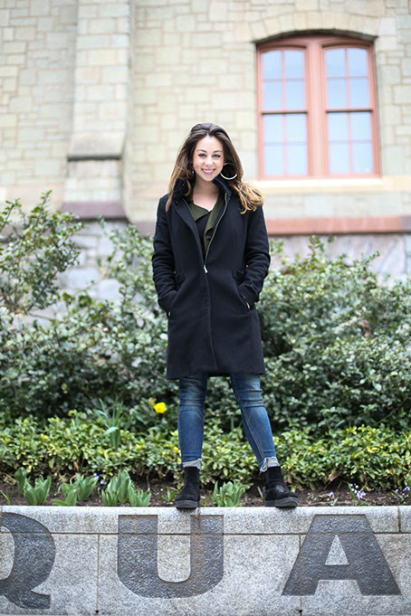

<
>
Incoming freshmen take note — College senior Ariel Koren has a theory for you.
To cancel out the bad luck from landing on the Compass at 37th and Locust streets before your midterms, do a handstand.
This is just the kind of quirky and lighthearted tradition to expect from Ariel, but it is still near the bottom of the long list of ideas that she's come up with and worked to make stick while at Penn.
From the school's annual Holi celebration to Active Cross-Cultural Training in Our Neighborhoods, an after-school foreign language program Koren founded, the Class of 2015 president has made several lasting changes on campus.
At first, Ariel said, the administration was completely against the idea of Holi in the form it takes today — throwing chalky colored powder into the air on College Green — due to the mess it leaves behind and other organizational issues. “I just went back and pushed it again. I think that’s been a very common theme for my experience on Class Board: Push, push as far as you can, and think big. Go all out,” she said.
Penn Holi eventually became a large, messy and color-filled event in 2013 thanks to a collaboration between the Hindu Student Council & Young Jains of America and the Class Boards.
Pulling the event together in just a few weeks that first year, organizers expected some several hundred people, but instead drew a crowd of more than a thousand, Ariel remembered.
Ariel called Holi the perfect collaboration between the Class Board, HSC & YJA and Penn Traditions. “It’s the ultimate way to bring people together in celebration of diversity and to create this sense of community,” she said.
“I remember the feeling of just pure bliss,” she recalled about the very first year that Holi was a collaborative event. “You can hardly recognize the people next to you,” she said. “It creates this sense that we’re just one big community at the end of the day.”
Last year’s Holi celebration capped off the month-long Wellness Project that the Class Boards organized in collaboration with various campus groups in an effort to spotlight mental health and wellness. “We spent the month recovering, and at the end we built up to this really festive and joyous celebration that was supposed to represent like an antidote or relief for everyone,” Ariel said.
“I like to think that the lines between HSC and Class Board are not significant in the process,” she said, meaning that both groups bring together their expertise to pull off the event off. “[Members of HSC] grew up celebrating it. They humble us and have patience while we make sure that we represent the tradition in the best way possible.”
Now, there’s a planning team, funding and a formula for putting on Holi each spring. “It’s cool knowing that I co-founded a tradition that’s going to make an impact for years to come,” Ariel said.
SELF-EXPANDING
Ariel's philosophy in general is grounded in leaving behind a lasting impact.
ACTION is an after-school Spanish language and Hispanic culture program that Ariel founded in 2011 in her hometown of Jacksonville, Fla. She started informally teaching her younger sister and her classmates who had an interest in learning foreign languages but struggled with learning difficulties.
She expanded the program to more schools and brought on more volunteers. ACTION continues to serve several schools in Jacksonville, and now, about 70 Penn volunteers work through ACTION in the Lea School and B.B. Comegys School in West Philadelphia and the Andrew Jackson School in South Philadelphia.
Ariel's friend and new ACTION co-director College sophomore Paola Gamarra has been slowly taking the reigns as Ariel prepares to graduate. “I could not have done this without Ariel's leadership,” she said. “Her leadership style has shaped my leadership style and also my personality, working in a team and everything else.”
Paola described how everyone in the organization is welcome to bring ideas to the table and that has been the key to the program’s evolution over the past few years, especially since expanding on what was established back in Jacksonville.
“The best thing that ACTION has is that there is not this mentality that we’re going to be just self-perpetuating — but to be self-expanding,” Ariel said, adding that at meetings, volunteers work to ask what they can do better than they did the week before. “That’s a mentality that I worked to create.”
Paola said her experience on other organizations' boards doesn’t compare to ACTION. “Ariel's passion for just helping others in general has inspired everyone else,” she said. “I’ve never seen a group of people who are collectively so passionate about something and I think that has something that has to do with her leadership.”
Ariel said that from the start, ACTION was meant to be something that would last. “It was important that it would be established as an institution that exists at Penn that has infrastructure that is formal that allows it to grow,” she said.
This self-starting quality could be part of what attracted Google to hire her post-graduation, when she’ll relocate to San Francisco.
“When I thought about every company in the world and where I would have a platform to make a really big impact and where I’d be surrounded by people who are passionate about changing that world — that’s Google,” she said.
Ariel spent last summer creating international marketing strategies with Google. She hosted an online conference which brought together companies from Latin America to talk about how they are using technology to innovate and collaborate to empower other businesses to use technology and Google Drive. On the side, she did projects to promote diversity with Google Translate.
A PERFORMANCE PASSION
ACTION is still just the tip of the iceberg for Ariel when it comes to foreign language. An East Asian Languages and Civilizations major, Ariel can speak 7 languages in total — she is fluent in Spanish, Portuguese, French, Italian, Chinese and English while dabbling in conversational Hebrew.
Chinese lecturer Melvin Lee said that Ariel was always one to actively participate in class — even though she almost dropped his class after the first day.
As a class typically with many heritage speakers, or those who may speak Chinese at home, Lee said it might have been intimidating for her. He said he had never met a student who moved directly from the intro-level Chinese class to his advanced spoken-Chinese class like she did.
Ariel excelled and continued to study the language very seriously. To Lee, it takes both talent and hard work to know so many languages at such a level. “If you just have talent, you wouldn’t reach that level of fluency,” he said. For Koren, he added, “She has a strong will. When she wants something, she works hard.”
Lee's advice to all of his language students is to “open your ear, your mouth and your heart” to learn language well. Ariel went back to him a year after taking his class to tell him that she always remembered that advice. “I think that’s why she’s so successful,” he said. “She’s really willing to approach people.”
College senior Mari Herron, Ariel's close friend from freshman year, said if the two of them are walking on campus, they usually stop about five times on the way to chat with people they see. She called Ariel “a light that just attracts people.”
Having a hand in a lot of different groups, Mari said Ariel has created friendships all over campus. “She’s a very popular person, and for good reason too. She doesn’t have an awkward streak in her at all,” she said.
Lee remembered Ariel's vocal passion for women’s issues sparking discussion in his class, knowing that language class discussions can be lackluster when the students don’t engage. “She’s infectious,” he said, “That was one of my best classes ever.”
Not to mention that Ariel's rapping career partly began in Lee’s own classroom. You read that right — she raps in Chinese and any language she knows other than English.
As part of a project for class, the students were tasked with translating English songs. “She debuted in our class!” Lee joked, adding that the following year she represented Penn at a speech contest with her rapping skills.
Since then, rapping has become one of Ariel's favorite pastimes. She has performed in public, like at Homecoming and when MC-ing for the Train and John Legend concert in 2013. Now, Koren’s senior thesis focuses on translating songs from English to Chinese, as well.
“I just love rapping in Chinese,” she said. “I think pop culture is a really cool way to get people excited about learning foreign languages.” Students sitting in Starbucks under 1920 Commons last weekend were treated to an impromptu a cappella performance during an interview.
CULTURE CHANGE
Ariel's knack for performance aligns well with both her personality and passions. Other than rapping, Ariel has performed in several shows with Penn Chinese Theater and the annual Vagina Monologues show.
Language has come to act as the bridge across many of Ariel's interests and campus involvement. In the Vagina Monologues this past year, she put her own spin on the piece “Reclaiming Cunt” by incorporating the word translated into other languages.
“I get to combine my love for the power of language and words with this important activism. I think words and language are so powerful and I think that really manifests itself in the Vagina Monologues,” she said.
Ariel's crossover involvement even worked into Feb Club, the 22-day event series in February for seniors hosted by the Class Board. The Vagina Monologues was one of the culminating events for the month with the proceeds from a bar fundraiser afterward going to Women Organized Against Rape, the beneficiary of the whole show.
For Class Board, Ariel said events are about creating safety and creating community for everyone — like with Feb Club events ranging from a night out in Atlantic City to a night at the orchestra.
The range of events contributes to the culture change that Ariel had hoped to bring in her role as president.
“I’m the first woman — when I was elected — in a over a decade, which is just ridiculous.” Since Koren’s election, there have been three men elected after her, now making her the only female Class Board president in 15 years.
“There’s really a huge under-representation of women in student government at Penn, so I think that in and of itself is something I’ve tried to make a difference in,” she said, noting that she’s tried to coach or mentor other women to run for positions.
Mari, Koren’s freshman year friend, said it’s clear how much she cares about the class: “You can see that in her personal connections and the way she talks to people on campus,” Herron said. ”She loves being around everyone.”
While Ariel comes across sugary sweet and upbeat, she speaks and acts with fervor on the issues she cares about. “[Ariel] has a very commanding presence. She’s little, she’s like 5 feet, but she does,” Mari said. “She takes her place in the room.”
Last year, Huffington Post Blog published her fiery defense of victims and rebuttal to an opinion piece in the Washington Post that said college campuses are succumbing to progressivism due to the heightened attention that victims of sexual assault receive.
Ariel feels that in many ways she did have to prove herself due to the precedent of male Class Board presidents on top of expectations regarding gender and leadership roles. However, continually running for reelection and seeing it through allowed her to see the challenges as opportunities.
“I got to be a part of some really important conversations, a lot of really important dialogue, and build a community of a lot of women leaders,” she said.
Juggling Class Board, ACTION, the issues important to her, her studies and everything else, Ariel still thinks what she does is nothing out of the ordinary for any Penn student; that’s just what Penn students do.
“I’m lucky that a lot of my things are interwoven. I have different passions that drive me and I get involved with things that I am really passionate about,” she said.
Paola Gamarra said that through it all, Ariel is humble: “She has accomplished so much, but she doesn’t feel the need to brag to everyone about it.”
Mari said what keeps Ariel busy is that she creates opportunities for herself by actively seeking them out. For example, Ariel represented the US as a delegate to the United Nation’s Commission on the Status of Women and was named a Harry S. Truman Scholar last spring.
“[Ariel] stays active about issues and people that are important to her,” Mari said. “Everyone in her life, she makes an effort to invest in them.”
As both a colleague from ACTION and a friend, Paola echoed, “She will always hold a friendship close. Even if ever it is not as close as it used to be, that person will still be very important to her. She will never stop caring about you.”
"You can see that in her personal connections and the way she talks to people on campus. She loves being around everyone.”
-Mari Herron, College Senior
Photos by Connie Kang
Video by Joyce Lin
Page by Analyn Delos Santos